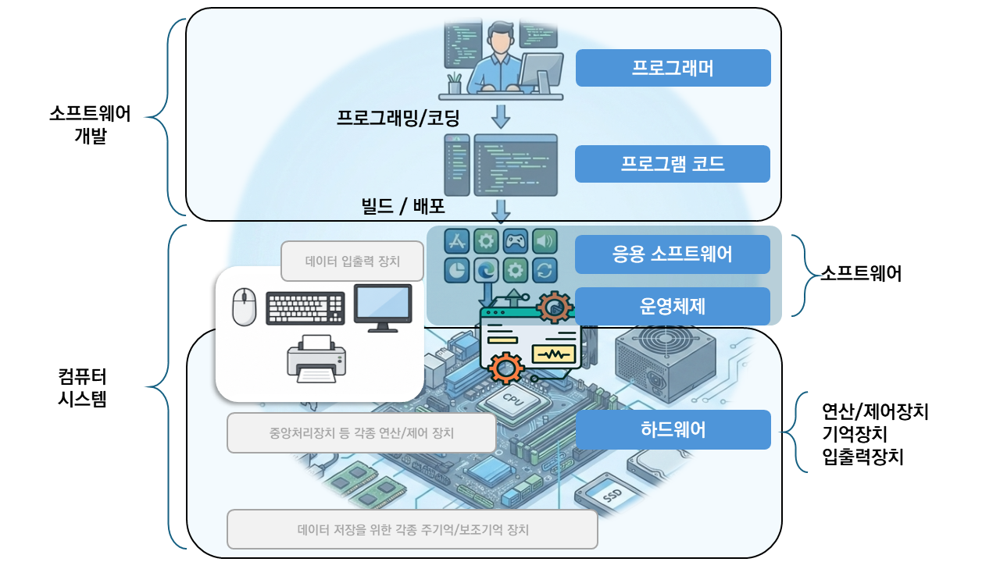
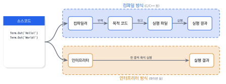
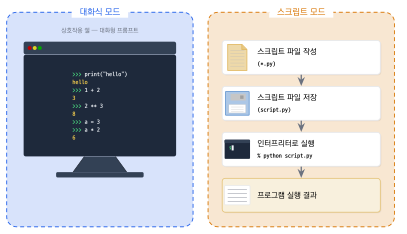
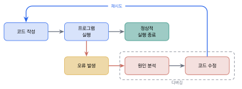
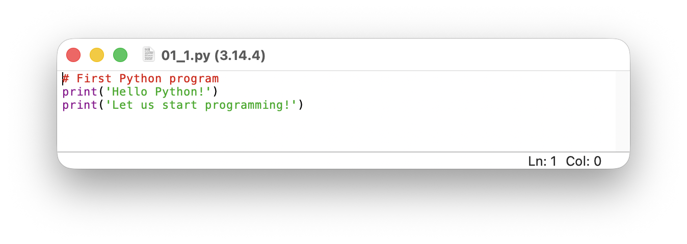
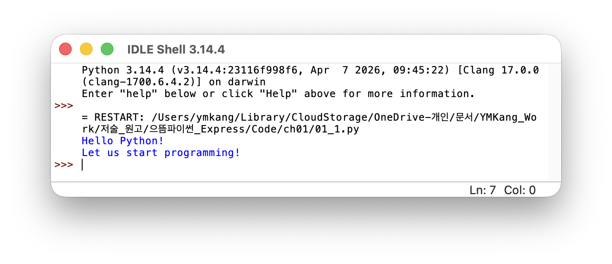

파이썬 소개와 개발 환경

이 장을 마치면
- 프로그램·소프트웨어·프로그래밍 언어의 기본 개념을 설명할 수 있다.
- 파이썬 언어의 특징과 주요 활용 분야를 이해할 수 있다.
- 파이썬 개발 환경(IDLE)을 설치하고 실행할 수 있다.
- 대화식 모드와 스크립트 모드의 차이를 구분할 수 있다.
print()로 첫 번째 프로그램을 작성·실행할 수 있다.
우리는 매일 스마트폰으로 알람을 맞추고, 날씨를 확인하고, 메신저로 대화를 나눈다. 이 모든 기능의 배후에는 프로그램이라는 보이지 않는 명령어 묶음이 작동하고 있다. 프로그래밍을 배운다는 것은 단순히 컴퓨터에게 일을 시키는 기술을 익히는 것이 아니라, 문제를 분석하고 해결책을 논리적으로 구성하는 사고방식을 기르는 과정이다. 수많은 프로그래밍 언어 가운데 파이썬은 "배우기 쉬우면서도 강력한 언어"라는 평가를 받으며, 인공지능, 데이터 분석, 웹 개발 등 다양한 분야에서 가장 널리 사용되는 언어로 자리잡았다.
이 장에서는 먼저 프로그램과 소프트웨어가 무엇인지 이해하고, 프로그래밍 언어가 어떻게 컴퓨터에서 실행되는지 그 원리를 살펴본다. 이어서 파이썬이라는 언어가 탄생한 배경과 특징을 알아보고, 실제로 파이썬을 컴퓨터에 설치하여 첫 번째 프로그램을 직접 작성해 볼 것이다. 프로그래밍이 처음인 독자도 이 장을 마치면 파이썬으로 간단한 메시지를 출력하고 계산을 수행할 수 있게 될 것이다. 파이썬을 더 깊이 배우고 싶은 독자에게는 Mark Lutz의 『Learning Python』과 Eric Matthes의 『Python Crash Course』를 추천한다.
1.1 프로그램과 파이썬
일상생활에서 경험하는 프로그램과 소프트웨어
우리의 일상에서 컴퓨터와 스마트폰은 빠질 수 없는 존재가 되었다. 아침에 스마트폰의 알람 소리에 맞춰 눈을 뜨고, 스마트폰을 통해 오늘 날씨를 확인하여 외출복을 고르는 것은 필자나 독자들의 흔한 일상이 아닐까 싶다. 혹은 회사에 출근하거나 학교에 다니는 사람들은 지하철이나 버스 안에서 스마트폰을 통해 음악을 감상하고, 게임을 하며, 메신저로 정보를 전달하고, SNS를 통해서 서로 정보를 교환하는 것도 아주 흔한 모습일 것이다.
이제 간단한 질문을 해 보자. 스마트폰은 어떻게 내가 어젯밤에 지정한 시간인 오전 7시에 알람 소리를 들려줄까? 또 스마트폰은 어떻게 오늘 날씨를 알려주고 음악을 들려줄까? 바로 여기에 프로그램program과 프로그래밍programming의 비밀이 있다. 여러분의 스마트폰에는 시계의 기능이 내장되어 있으며, "시간이 오전 7시가 되면 알람 소리를 들려주도록 하라"라는 명령어를 처리하는 기능도 제공되고 있기 때문이다.
이처럼 여러분의 스마트폰이 지정된 명령어(혹은 프로그램)를 수행할 수 있는 하드웨어hardware와 소프트웨어software를 가지고 있으므로 이러한 작업이 이루어진다. 하드웨어란 컴퓨터와 스마트폰과 같은 정보통신 기계의 물리적 부품을 말하며, 중앙처리장치(CPU), 저장 장치, 출력 장치, 입력 장치 등으로 구성되어 있다. 그리고 이 하드웨어에서 특정한 작업을 처리하는 프로그램을 소프트웨어라고 한다.
컴퓨터 하드웨어가 아무리 훌륭하다 하더라도 이 하드웨어에서 수행될 아래아 한글, 파워포인트, 엑셀, 크롬 브라우저와 같은 응용 프로그램이 없다면 무용지물일 것이다. 운영체제operating system는 응용 프로그램이 동작할 수 있도록 도와주는 컴퓨터 프로그램으로 하드웨어를 관리하여 응용 프로그램이 실행될 수 있는 환경을 제공하는 프로그램(혹은 소프트웨어)이다. 운영체제 중에서 널리 이용되는 것으로 마이크로소프트에서 만든 윈도우 10, 윈도우 11 등이 있으며, 리눅스 운영체제, 애플에서 만든 macOS 등의 운영체제도 있다. 스마트폰을 위한 운영체제로는 구글에서 개발한 안드로이드와 애플사에서 개발한 iOS 등이 있다. 그림 1.1은 컴퓨터 하드웨어와 소프트웨어와 프로그래밍의 관계를 보이고 있다.

프로그램, 프로그래밍, 프로그래머
만일 여러분이 원한다면 기상할 시간을 오전 6시나 오전 7시 30분으로 변경할 수 있으며, 스마트폰은 다시 설정된 시간에 맞추어 알람 소리를 들려줄 것이다. 컴퓨터나 스마트폰은 여러분의 명령을 처리하는 프로그램을 가지고 있다. 우리가 이 책에서 배울 프로그램이란 컴퓨터에서 특정한 작업을 수행하기 위한 명령어들의 모임 또는 작업을 완료하기 위해 작성된 일정한 형식을 갖춘 명령어를 포함한 코드나 실행 파일을 말한다.
프로그래밍programming은 코딩coding이라고도 하며, 하나 이상의 명령어들을 입력하여 프로그램을 작성하는 과정이다. 그리고 이러한 프로그램을 작성하는 사람을 프로그래머programmer라 한다. 프로그래머는 컴퓨터에 명령을 내리는 명령어를 작성할 수 있어야 한다.
프로그래밍 언어와 기계어
실제로 전기적 신호에 의해서 작동되는 컴퓨터는 0(OFF)과 1(ON)의 이진binary 값만을 이해하고 저장하므로, 최종적으로 컴퓨터가 수행하는 명령은 0000100100001111...과 같은 값으로 된 명령이다. 이 명령을 잘 조직화하여 만들면 효과적으로 컴퓨터를 제어할 수 있다.
그러나 001110010000100...과 같은 명령은 사람이 이해하기 너무 어려워서 작성하는 데에 시간이 오래 걸리며, 오류가 발생할 가능성도 크고, 수정이 어렵다. 따라서 실제로 기계어로 개발하는 경우는 거의 없다. 대부분의 개발은 사람이 쉽게 이해할 수 있는 프로그래밍 언어programming language를 이용하여 명령을 표현하고 이 프로그래밍 언어를 기계어로 번역하는 과정을 거쳐서 프로그램을 수행하도록 한다. 프로그래밍 언어의 역사와 원리에 대한 더 자세한 내용은 J. Glenn Brookshear의 『Computer Science: An Overview』에서 다루고 있다.

프로그래밍 언어란 컴퓨터 시스템을 동작시키는 소프트웨어를 만들기 위한 인위적인 언어로, 컴퓨터에게 지시를 해야 하기 때문에 이를 위한 엄격한 형식의 문법을 가지고 있다. 컴퓨터가 만들어진 이래로 수없이 많은 프로그래밍 언어가 만들어졌으며, 개발자들은 사용 목적에 따라 여러가지 언어들 중 하나를 선택하였다. 예를 들어, 자동차나 프린터 등과 같이 사용 목적과 기능의 범위가 명확히 정해진 기계(임베디드 시스템)에서 제한된 목적과 용도로 사용되는 프로그래밍 언어는 수행 속도가 중요하므로 C 혹은 C++ 언어를 주로 사용하며, 웹 서비스를 위해서는 HTML과 같은 마크업 언어와 JavaScript, PHP와 같은 언어가 많이 사용된다.
지금까지 수천 종 이상의 프로그래밍 언어가 만들어졌는데, 이 책에서는 강력하면서도 배우기 쉬운 파이썬Python이라는 프로그래밍 언어를 배우게 될 것이다. 파이썬을 처음 접하는 독자라면 Allen Downey의 『Think Python』도 좋은 입문서이다.
컴파일러 방식과 인터프리터 방식
현재까지 개발된 수천 종의 프로그래밍 언어를 여러 가지 방식으로 분류할 수 있다. 컴퓨터 프로그래밍을 통해 만든 프로그램의 명령어를 해석하는 방식에 따라 분류하면 프로그래밍 언어는 크게 인터프리터 방식과 컴파일 방식의 두 종류 언어가 있다.
컴파일 방식의 프로그램은 소스 코드 전체를 기계어로 번역하여 실행 파일을 생성한 뒤 이 기계어 명령을 실행하는 방식으로 동작한다. 마치 외국어로 쓰인 책 전체를 먼저 번역한 뒤 읽는 것과 비슷하다. 대표적인 언어로는 C, C++, Pascal 등이 있다.
반면 인터프리터 방식의 프로그램은 소스 코드를 한 줄씩 읽어 들여 바로 실행하는 방식이다. 마치 통역사가 한 문장씩 듣고 바로 통역해 주는 것과 같다. 파이썬은 인터프리터 방식으로 명령어를 해석하는데, 이는 명령어들을 한 번에 한 줄씩 읽어들여서 실행하는 방식이다. 따라서 명령어들을 기계어로 번역하는 컴파일 과정을 거쳐 기계어로 된 실행 파일을 만들어 실행하는 컴파일 방식과는 달리 바로 실행 단계를 거친다. 하지만 이러한 방식은 미리 기계어로 번역해 놓고 실행하는 컴파일 방식에 비해 실행 속도가 느리다는 단점도 있다. 최근 파이썬 번역기의 기술 발전으로 인하여 과거 인터프리터에 비하여 비약적인 속도 향상이 이루어지고 있다.
| 인터프리터 방식 | 컴파일러 방식 | |
|---|---|---|
| 정의 | 명령을 한 번에 한 줄씩 읽어 들여서 실행하는 방식이다. | 명령을 기계어로 번역하여 실행파일을 생성하고 이것을 동작시키는 방식이다. |
| 장점 | 컴파일 단계를 거칠 필요가 없기 때문에 코드의 수행 결과를 바로 확인할 수 있다. | 기계어 코드를 바로 실행시키므로 일반적인 경우 속도가 더 빠르다. |
| 단점 | 실행 시간이 느리다. | 원시 프로그램의 크기가 크다면 번역 과정에 상당한 시간이 소요된다. 코드의 결과를 즉시 확인할 수 없다. |
| 사용되는 언어 | 파이썬, BASIC 등 | C/C++, PASCAL 등 |
인터프리터 방식의 장점은 이식성이 좋아서 기계에 관계없이 잘 동작한다는 점이며, 소스 코드의 실행 결과를 즉시 확인할 수 있다는 것 역시 큰 장점이다.
파이썬이란?
파이썬Python은 1989년 귀도 반 로섬Guido van Rossum에 의해 개발된 프로그래밍 언어이다. 귀도 반 로섬이 파이썬을 고안한 시기는 1980년대 말이며, 1989년 12월에 구현을 시작하였다. 파이썬이라는 이름은 그리스 로마 신화의 피톤Python이라는 뱀 형상의 괴물에서 유래했다. 그러나 귀도 반 로섬은 파이썬 프로그래밍 언어가 그리스 로마 신화에 나오는 이 뱀 형상의 괴물에서 따온 것은 아니라고 밝혔다. 그는 파이썬 언어의 이름을 자신이 좋아하던 영국 코미디 "몬티 파이썬의 날아다니는 서커스(Monty Python’s Flying Circus)"에서 따온 것이라고 밝혔다.
파이썬은 인터프리터 방식의 언어로서 다음과 같은 특징을 가지고 있다.
첫째, 직관적이고 단순한 문법을 가지고 있어서 배우는 데 시간이 비교적 적게 걸린다. 프로그래밍을 처음 접하는 사람도 파이썬의 코드를 읽으면 대략적인 의미를 짐작할 수 있을 정도로 문법이 자연스럽다.
둘째, 축약된 코딩이 가능해서 짧은 코드로 많은 기능을 수행할 수 있다. 다른 언어에서 여러 줄에 걸쳐 작성해야 하는 코드를 파이썬에서는 한두 줄로 표현할 수 있는 경우가 많다.
셋째, 오픈 소스open source 방식을 채택하여 방대한 라이브러리를 무료로 편리하게 이용할 수 있다. 전 세계 개발자들이 만들어 놓은 수십만 개의 패키지를 자유롭게 활용할 수 있다는 것은 파이썬의 큰 장점이다.
넷째, 다양한 활용 분야에서 사용된다. 웹 개발, 데이터 분석, 인공지능(AI), 머신러닝, 자동화, 과학 계산, 게임 개발 등 거의 모든 분야에서 파이썬이 활용되고 있다.
다섯째, 객체지향 프로그래밍을 지원한다는 점도 큰 장점이다. 이 책을 통해 다양한 특징에 대해 천천히 살펴볼 것이다.
파이썬의 특징에 대한 더 깊은 이해를 위해 John Zelle의 『Python Programming』을 참고하라. 파이썬은 TIOBE 지수에서 가장 인기 있는 프로그래밍 언어 1위를 차지하고 있다. TIOBE 지수는 아래 URL을 통해 접근하여 확인할 수 있다.
파이썬은 전통적으로 인기를 누리던 언어인 자바와 C, C++ 언어의 인기를 넘어선 언어라는 것을 확인할 수 있다. 또한, 파이썬 언어는 인공지능과 빅데이터 처리에 적합한 언어로 평가받고 있으며, 이 인기는 오래 지속될 것으로 예상된다. 뿐만 아니라 프로그램 개발자들이 가장 많이 찾는 Stack Overflow 웹 사이트에서 가장 많은 질문이 올라오는 언어로 관심을 받고 있다. 파이썬 학습에 도움이 되는 다양한 자료가 Real Python에서도 제공되고 있다.
파이썬이 이렇게 많은 분야에서 사랑받는 이유는 "읽기 쉬운 코드"라는 철학 덕분이다. 귀도 반 로섬은 파이썬을 설계할 때 "코드는 쓰는 것보다 읽는 경우가 훨씬 많다"는 점에 주목하여, 누구나 쉽게 읽고 이해할 수 있는 문법을 만들고자 하였다. 이러한 철학은 파이썬 커뮤니티 전체에 퍼져서, 파이썬으로 작성된 코드는 다른 언어에 비해 유지보수가 용이하다는 평가를 받고 있다.
1.2 파이썬 설치와 개발 환경
파이썬 설치하기
이제부터 본격적으로 파이썬을 설치하고 사용해 보도록 하자. 파이썬은 "Python Software Foundation"이라고 하는 파이썬 소프트웨어 재단에서 관리하고 있다. 우선 이 재단의 홈페이지인 파이썬 공식 사이트에 접속해 보도록 하자.
파이썬 역시 다른 프로그래밍 언어와 같이 소프트웨어 저작권이 존재하기 때문에 개발이나 관리, 그리고 배포를 하는 기관이 필요하다. 이와 같은 목적으로 설립된 기관이 파이썬 소프트웨어 재단이다. 이 기관에서 제공하는 공식 웹 사이트를 통해서 우리는 파이썬을 동작시키는 인터프리터를 내려 받을 수 있다. 또 파이썬을 이용한 프로그램 개발과 관련된 다양한 개발 문서를 얻을 수 있다.
파이썬을 내려 받아 사용하기 위해서는 홈페이지의 "Downloads" 메뉴를 클릭하면 된다. 다운로드 페이지에서 여러분의 컴퓨터 운영체제(macOS, Windows, Linux 등)를 하나 선택한다. 이 책은 사용자가 가장 많을 것으로 예상되는 윈도우 운영체제를 중심으로 설명을 진행할 것이다.
윈도우 운영체제나 카카오톡과 같은 소프트웨어가 매번 갱신되는 것처럼 파이썬 인터프리터의 버전도 수시로 갱신되고 있다. 따라서 여러분이 이 책을 읽고 있을 때는 더 높은 버전의 파이썬 인터프리터가 나와 있을 가능성이 있다. 이러한 점을 염두에 두고 파이썬 인터프리터를 내려 받기 바란다.
다운로드가 완료된 설치 파일을 실행하면 파이썬 설치 화면이 나타난다. 설치에 앞서 옵션이 아래쪽에 나타나는데, 반드시 "Add Python.exe to PATH" 옵션을 선택해야 한다. 그러면 컴퓨터 시스템의 어느 위치에서든 파이썬 인터프리터를 실행시킬 수 있게 된다. 좀 더 엄밀한 의미로는 시스템 환경변수에 파이썬 실행 프로그램의 경로를 추가한다는 것인데, 이처럼 환경변수를 설정하면 커맨드 창(윈도우 운영체제 기준)에서 설치된 곳으로 옮겨 가지 않고도 바로 파이썬 실행이 가능하다.
설치 시 "Add Python.exe to PATH" 옵션을 반드시 선택해야 한다.
이 옵션을 체크하지 않으면 나중에 환경 변수를 직접 설정해야 하는 번거로움이 생긴다. 초보자가 가장 많이 겪는 문제 중 하나가 바로 이 옵션을 체크하지 않아서 명령 프롬프트에서 python 명령이 동작하지 않는 것이다. 만약 이미 설치했는데 이 옵션을 빠뜨렸다면, 파이썬을 제거한 후 다시 설치하는 것이 가장 간단한 해결 방법이다.
"Install Now"를 눌러 설치를 시작하자. 파이썬의 설치는 파이썬 인터프리터와 라이브러리 등이 설치된다는 안내문과 함께 진행 정도가 표시된다. 파이썬 설치가 정상적으로 완료되었을 경우 "Setup was successful" 화면이 나타난다. 이 화면의 "Close" 버튼을 눌러 설치를 종료하자. 설치를 완료하였으니 이제 파이썬을 사용할 수 있는 상태가 되었다.
파이썬의 두 가지 실행 모드
파이썬은 크게 두 가지 실행 모드를 제공한다.
첫 번째는 대화식 실행 모드interactive mode이다. 이 모드는 파이썬 명령어를 대화창에 입력하면 바로 인터프리터의 반응(피드백)을 받을 수 있는 모드이다. 화면에 나타나는 >{>}>를 프롬프트prompt라고 부르며, 이 프롬프트 다음에 파이썬 명령어를 입력할 수 있다. 명령을 입력하고 엔터(Enter) 키를 누르면 그 줄의 실행 결과가 바로 다음 줄에 나타난다. 이 모습이 마치 대화하듯이 주고받는다고 해서 대화형 모드라고 한다. 간단한 코드를 테스트하거나 계산기처럼 사용할 때 매우 편리하다.
두 번째는 스크립트 실행 모드script mode이다. .py라는 확장자를 가지는 스크립트를 만들어서 파이썬 인터프리터에 한꺼번에 전달하여 실행시키는 모드이다. 이 책에서 간단한 코드를 테스트할 때는 주로 대화식 실행 모드를 사용할 것이며, 다소 복잡한 코드는 스크립트 파일을 만들어서 실행해 볼 것이다.

그림 1.3은 두 가지 실행 모드의 동작 과정을 시각적으로 비교한 것이다. 대화식 모드는 한 줄씩 입력하고 즉시 결과를 확인하는 반복 과정이며, 스크립트 모드는 전체 코드를 파일에 작성한 후 한꺼번에 실행하는 방식이다.
| 대화식 모드 | 스크립트 모드 | |
|---|---|---|
| 입력 | 프롬프트에 명령어 입력 후 엔터 | 코드를 파일에 저장 후 실행 |
| 수행 | 입력 후 엔터 키를 입력하면 실행 | 코드를 저장하고 명령줄에서 파이썬 번역기를 호출하여 실행하거나 IDLE에서 F5 단축키로 실행시킬 수 있다. |
| 용도 | 간단한 테스트 | 복잡한 프로그램 작성 |
| 비고 | 코드를 입력하고 엔터 키를 입력하면 실행 결과가 코드 아래에 나타난다. | 파일을 저장해야 하므로 스크립트의 기능에 어울리는 파일 이름이 있어야 한다. |
IDLE 통합 개발 환경
파이썬을 설치하면 IDLEIntegrated Development and Learning Environment이라는 간단한 통합 개발 환경이 함께 설치된다. IDLE은 "통합적 개발/학습 환경"이라는 뜻을 가지고 있다. 이것은 파이썬이 제공하는 아주 간단한 통합 개발환경이라고 할 수 있다. IDLE을 사용하는 이유는 파이썬 프로그램의 편집과 실행을 대화창에서 하는 것보다 쉽게 하도록 하기 위해서이다.
윈도우 10의 경우 작업 표시줄의 검색창에 "IDLE"을 검색어로 입력해 보면 IDLE 프로그램이 나온다. 이때 나타나는 IDLE을 눌러서 실행시켜 보자. 파이썬이 제대로 설치되었다면 파이썬 명령어를 처리할 수 있는 인터프리터가 실행될 것이다.
IDLE을 실행하면 파이썬 대화창(파이썬 셸)이 나타난다. 이와 같은 파이썬 대화창을 파이썬 셸python shell 혹은 파이썬 대화식 셸python interactive shell이라고 한다. 대화창에는 파이썬의 버전과 이 버전의 배포 일자 등의 정보가 나타나며, "help", "copyright", "credits", "license" 등의 특정 단어를 입력하면 더욱 상세한 정보를 얻을 수 있다.
이 화면을 통해 앞서 살펴본 대화식으로 코딩하는 것도 가능하지만, IDLE의 상단에 나타나 있는 "File" 메뉴를 이용하여 "New File"을 선택하면 새로운 편집 창이 열린다. 이 편집 창에서 코드를 작성하고 파일로 저장한 뒤 F5 키를 눌러 실행할 수 있다. 이것이 바로 스크립트 실행 모드이다.
여러분이 편집 프로그램으로 만든 파이썬 프로그램을 파이썬 소스 코드source code 혹은 소스 파일source file이라고 한다. 하지만 다른 말로 스크립트 파일script file이나 모듈module이라고도 한다. 소스 코드나 소스 파일은 일반적인 프로그래밍 언어에서도 사용하는 용어이지만, 스크립트 파일이나 모듈이라는 이름은 파이썬에서 주로 사용하는 용어로 추후에 자세히 설명할 것이다.
이렇게 텍스트 파일을 이용한다고 해도 파이썬 프로그램을 만들 수 있다. 하지만 복잡한 프로그램을 작성하고 관리하는 데에는 한계가 있다. 그래서 사용하는 도구가 통합 개발 환경IDE: Integrated Development Environment이다. IDLE 외에도 PyCharm, Visual Studio Code, Jupyter Notebook 등 다양한 IDE가 있으며, 각자 자신에게 맞는 개발 환경을 선택하여 사용할 수 있다. Google Colab을 이용하면 별도의 설치 없이 웹 브라우저에서 파이썬을 실행해 볼 수도 있다. 파이썬 개발 환경의 설치와 구성에 대한 자세한 안내는 Eric Matthes의 『Python Crash Course』에서 확인할 수 있다.
구글 코래버러토리를 이용한 프로그래밍
이 책의 실습은 코랩Colab 환경에서 파이썬으로 이루어지며, 넘파이NumPy, 판다스pandas와 같은 데이터 처리 패키지와 사이킷런scikit-learn, 텐서플로우TensorFlow와 같은 머신러닝 도구를 사용할 것이다. 우선 코랩에 대한 기초적인 내용을 살펴보자.
파이썬을 이용하는 여러 가지 방법이 있으나 그중에서도 구글의 코래버러토리Colaboratory는 클라우드 환경에서 주피터 노트북 기반의 파이썬 개발을 위한 탁월한 환경을 제공한다. 주피터 노트북Jupyter Notebook은 웹 환경에서 대화식으로 프로그램을 작성하고 실행할 수 있는 오픈소스 프로젝트의 이름이다. 줄여서 코랩이라고 부르는 이 서비스는 주피터 노트북을 구글의 서버에서 구동시켜 사용자가 이 서버에 접속하는 방식으로 파이썬을 이용할 수 있다.
이 서비스의 장점을 설명하면 크게 다음과 같은 것들이 있다.
- 파이썬을 설치하지 않고도 웹 환경의 주피터 노트북에서 파이썬을 사용할 수 있다.
- 다른 사용자와 파일을 공유할 수 있으며 협업을 통한 개발도 손쉽게 할 수 있다.
- 넘파이, 판다스, 사이킷런, 텐서플로우 등의 패키지가 미리 설치된 환경을 제공한다.
- 클라우드에서 제공하는 GPU와 TPU를 사용하여 고성능 계산을 할 수 있다.
코래버러토리 환경은 다음 웹 사이트에 구글 계정으로 로그인하면 사용할 수 있다.
코랩 서비스에 로그인을 하고 새로운 파이썬 파일인 파이썬 노트북을 생성한 다음, 아래와 같이 Hello Python을 출력하는 코드를 작성해 보자.
print('Hello Python')Hello Python
작성된 코드는 Untitled0.ipynb와 같이 기본 파일 이름으로 저장되는데, 이 이름은 적당한 이름으로 수정할 수 있다. 파이썬 코딩을 위해서는 코랩 환경 최상단의 "+ 코드" 메뉴를 선택하면 된다. 이 메뉴를 선택할 때마다 코드를 입력할 수 있는 셀cell이 나타난다. 셀에 코드를 입력하고 좌측의 실행 버튼을 누르면 파이썬 코드가 번역되고 웹 환경에서 실행된다. 실행 결과는 실행한 셀의 아래쪽에 나타나며, 이 셀 아래에 새로운 셀을 만들고 명령어를 입력하여 프로그램을 실행시킬 수 있다. 그리고 새로운 명령어가 실행될 때마다 [1], [2], [3]과 같이 셀의 실행 번호가 증가하며 나타나는 것을 볼 수 있다. 코랩에 접속하면 코랩의 소개 문서도 함께 확인할 수 있다.
코랩 환경은 각자의 컴퓨터가 아니므로 개인적으로 가지고 있는 데이터를 활용할 수 있는 방법이 필요하다. 이를 위해서는 구글 코랩과 연동하기 편리한 구글 드라이브를 이용할 수 있다. 구글 계정이 있다면 이 드라이브도 같이 사용할 수 있다. 가장 먼저 해야 할 일은 자신의 드라이브를 코랩에서 사용할 수 있도록 마운트mount하는 것이다. 마운트는 어떤 장치를 컴퓨터 시스템에서 접근할 수 있도록 등록하는 일이라고 생각하면 된다.
from google.colab import drive
drive.mount('/content/drive')Go to this URL in a browser: https://accounts.google.com/****** Enter your authorization code: 4/3wH****************************9UA0ng Mounted at /content/drive
위와 같이 드라이브를 코랩에 마운트시키려고 하면 이 작업에 대한 승인을 요청하는 페이지의 주소가 실행 결과 셀에 나타난다. 이것을 클릭하면 구글 계정으로 로그인을 하여 드라이브 파일 스트림이 여러분의 드라이브에 접근할 수 있도록 하라는 표시가 나타날 것이다. 로그인을 마치면 승인에 필요한 코드가 나타나는데, 이것을 복사하여 코랩 실행 결과 셀의 입력창에 넣으면 된다. 이 과정을 마치면 각자의 개인 구글 드라이브를 코랩에서 /content/drive라는 이름으로 사용할 수 있게 된다.
구글 드라이브의 내용을 코래버러토리에서 이용하기
구글 코랩에서 현재 작업하고 있는 위치가 어디인지 알고 싶으면 !pwd를 아래와 같이 입력하면 된다. !는 코랩에서 시스템 명령을 입력할 때 쓰는 기호이고, pwd는 "print working directory"의 약어로 현재 작업 중인 위치를 출력하는 리눅스Linux 명령어이다.
!pwd /content
보는 바와 같이 코랩은 /content에서 동작하며 드라이브는 이 위치의 아래에 drive라는 이름으로 추가된다. 코랩 환경이 동작하는 가상 컴퓨터에 시스템 관리 명령을 입력하고 싶으면 언제든 느낌표 기호 !를 입력하고 이어서 리눅스 콘솔 명령을 쓰면 된다.
각자의 구글 드라이브에 있는 콘텐츠를 코랩에서 사용할 수 있도록 마운트를 완료했으므로 실제 데이터를 저장해 코랩에서 사용해 보자. myData.png라는 파일을 구글 드라이브 저장소에 업로드해 보자. 구글 드라이브를 코랩에 마운트했으므로 코랩에서도 이 파일을 볼 수 있어야 한다. 저장 장치의 내용을 볼 때 사용하는 리눅스 명령은 ls인데, list를 의미한다.
현재 위치는 /content로 되어 있다. 내 드라이브의 내용을 보고 싶으면 현재 디렉터리 아래에 마운트되어 있는 ./drive 디렉터리를 살펴보면 된다. 내 드라이브는 MyDrive라는 이름으로 마운트된다. 여기에 무슨 파일이 있는지 확인하려면 아래와 같이 입력하면 된다. 드라이브에 올린 myData.png가 보일 것이다.
!ls ./drive/MyDrive -la total 1247 -rw------- 1 root root 1226500 Sep 9 05:20 myData.png drwx------ 2 root root 4096 Nov 19 2019 Pandas
코랩이 동작하는 환경은 리눅스 시스템이다. 따라서 리눅스 시스템 관리 방식으로 다양한 동작을 코랩 환경에서 할 수 있다.
앞서 드라이브에 파일을 올리고 구글 코랩에서 이를 확인해 보았다. 이제 이 파일을 읽어서 화면에 그리는 일을 해 보자. 이것은 맷플롯립Matplotlib이라는 패키지를 활용해 쉽게 할 수 있다. 이러한 패키지는 이미 코랩 환경에 설치가 되어 있다. 이 책에서 활용하는 패키지는 거의 모두 코랩 환경에 미리 설치되어 있기 때문에 여러분은 특별한 패키지 설치 과정 없이 아래 코드를 바로 입력하여 동작을 확인할 수 있을 것이다.
import matplotlib.image as mpimg
import matplotlib.pyplot as plt
img = mpimg.imread('./drive/MyDrive/myData.png')
plt.imshow(img)<matplotlib.image.AxesImage at 0x7fe3d365fda0>
코랩은 설치가 필요 없고 패키지가 미리 준비되어 있어 처음 배우는 단계에 편리하다. 반면 IDLE이나 다른 통합 개발 환경은 내 컴퓨터의 파일을 그대로 다룰 수 있고 인터넷 연결 없이도 사용할 수 있다는 장점이 있다. 이 책의 예제는 두 환경 어디에서나 똑같이 동작하므로, 각자 편한 환경을 선택하여 실습하면 된다.
1.3 첫 번째 파이썬 프로그램
이제 파이썬을 이용한 첫 프로그램을 작성해서 프로그래밍의 세계로 들어가 보자. 처음이지만 두려워할 필요는 전혀 없다. 파이썬은 초보자가 가장 쉽게 시작할 수 있는 언어이다.
대화식 모드에서 실행하기
파이썬 IDLE을 실행하면 >{>}> 프롬프트가 나타난다.
이제 파이썬 인터프리터가 실행된 이후에 무슨 일을 할 수 있는지 살펴보자.
첫 파이썬 명령으로 print('Hello World!')를 입력해 보도록 하자.
명령을 입력하고 나서 키보드의 엔터(Enter) 키를 누르면 된다.
입력된 명령이 인터프리터에 전달되고 인터프리터는 이를 해석하여 실행할 것이다.
그러면 프롬프트 아래에 Hello World!라는 문자가 출력될 것이다.
>>> print('Hello World!')
Hello World!
print() 함수는 괄호 안의 내용을 화면에 출력하는 파이썬의
내장 함수built-in function이다.
print() 함수는 괄호 안의 작은따옴표나 큰따옴표 내부에 있는 문자열이나 따옴표 외부의 숫자 등을 출력하는 역할을 한다. 작은따옴표(') 또는 큰따옴표(")로 감싼 문자의 나열을 문자열string이라 하며, print() 함수는 이 문자열을 화면에 출력한다.
만일 print('Hello World!') 대신 print("Hello World!")와 같이 큰따옴표를 print() 함수 내에 넣어도 출력의 결과는 같을 것이다.
>>> print("Hello World!")
Hello World!
주의할 점은 print('Hello World!")와 같이 작은따옴표로 시작해서 큰따옴표로 끝나거나, 반대의 경우에는 잘못된 명령으로 인식해서 오류가 발생한다는 것이다. 이때 파이썬 인터프리터는 다음과 같은 오류 메시지를 출력한다. 문자열을 따옴표로 시작해서 따옴표로 닫았지만, 시작은 작은따옴표, 끝은 큰따옴표로 했기 때문에 작은따옴표로 시작한 문자열이 끝나지 않았다고 판단하기 때문이다.
>>> print('Hello World!")
...
SyntaxError: incomplete input
파이썬 대화창은 오류가 날 때 오류가 발생한 문장과 함께 오류의 내용을 출력해 준다. 위의 오류는 SyntaxError: incomplete input이다. 우리말로 해석하자면 구문 오류(Syntax Error)가 발생하였으며, "완전하지 않은 입력이 나타났다"라는 의미이다. 다소 축약된 그리고 익숙하지 않은 용어가 등장하기 때문에 처음 파이썬을 접하는 개발자들은 당황할 수 있다. 그러나 그 위의 줄에 분홍색 문자가 오류가 발생한 곳을 정확하게 알려주므로 당황하지 않아도 된다. 앞으로도 이러한 오류를 수없이 만나면서 프로그래밍 실력이 늘게 될 것이다. 오류에 친숙해지도록 하자. 파이썬의 오류 메시지를 이해하는 방법에 대해서는 Paul Barry의 『Head First Python』에서 쉽게 설명하고 있다.
파이썬의 오류와 대처 방법
프로그램을 작성할 때는 이와 같은 오류가 매우 빈번하게 나타나므로 오류에 당황하지 말고 번역기가 제공하는 오류 메시지를 차근차근 읽고 수정해서 다시 작동시켜보면 된다. 파이썬에서 자주 만나게 되는 오류의 종류를 미리 알아두면 도움이 된다.
SyntaxError는 파이썬 문법에 맞지 않는 코드를 작성했을 때 발생한다. 따옴표를 짝이 맞지 않게 사용하거나, 콜론을 빠뜨리거나, 괄호를 닫지 않은 경우 등이 대표적이다. NameError는 정의되지 않은 이름(변수나 함수)을 사용했을 때 발생한다. Print를 print 대신 사용하는 경우가 여기에 해당한다. IndentationError는 들여쓰기가 올바르지 않을 때 발생하는데, 파이썬에서는 들여쓰기가 문법적 의미를 가지므로 이 오류를 특히 조심해야 한다.
오류 메시지를 만났을 때 가장 중요한 것은 당황하지 않는 것이다. 오류 메시지의 마지막 줄을 읽으면 어떤 종류의 오류인지 알 수 있고, 그 위에 표시된 줄 번호와 화살표를 통해 오류가 발생한 위치를 파악할 수 있다.

그림 1.4은 오류를 만났을 때의 대처 과정을 보여 준다. 오류를 만나면 메시지를 읽고 코드를 수정한 뒤 다시 실행하는 과정을 반복한다. 프로그래밍에서 오류는 실패가 아니라 학습의 기회이다. 오류를 수없이 만나면서 프로그래밍 실력이 늘게 될 것이다.
파이썬의 대화창을 종료하고 싶으면 키보드의 Control 키와 ‘Z’ 키를 함께 입력하거나 exit() 함수를 호출하면 된다. 파이썬의 대화창이 종료되면 그 동안 입력한 모든 내용은 저장되지 않고 사라지므로 주의하도록 하자.
파이썬은 대소문자를 구분한다.
print()라는 이름의 함수는 파이썬의 내장함수로 화면 출력을 하는 기능을 수행하지만, 대문자 P로 시작하는 Print() 혹은 대문자로 이루어진 PRINT()는 파이썬의 내장함수가 아니므로 이 함수를 이용해서 출력하려고 하면 오류가 발생한다. 다음에 나타난 오류 "Print is not defined"는 Print() 함수가 정의되지 않았다는 의미이다.
또한 print() 함수 앞에 한 칸 공백을 이용한 들여쓰기를 해도 오류가 발생하므로 의미 없는 들여쓰기를 하지 않도록 한다.
대화식 모드에서 간단한 계산
대화식 모드에서는 파이썬을 계산기처럼 사용할 수도 있다. 프롬프트에 수식을 입력하고 엔터 키를 누르면 즉시 계산 결과가 표시된다.
>>> 10 + 20 30 >>> 3 * 5 15 >>> 100 / 4 25.0 >>> 2 ** 10 1024
위 예제에서 +는 덧셈, *는 곱셈, /는 나눗셈,
**는 거듭제곱 연산자이다. 특히 나눗셈 연산자 /를 사용하면 결과가 항상 소수점을 포함한 실수형(float)으로 나온다는 점에 주목하자. 100 / 4의 결과가 25가 아닌 25.0으로 출력되는 것이 바로 이 때문이다.
연산자에 대한 자세한 내용은 다음 장에서 살펴볼 것이다.
스크립트 파일 작성과 실행
이제 스크립트 파일을 만들어서 실행해 보자.
IDLE에서 "File \(\rightarrow\) New File"을 선택하면 편집 창이 열린다.
다음 코드를 입력하고 hello.py라는 이름으로 저장한다.
# 첫 번째 파이썬 프로그램
print('Hello Python!')
print('Let us start programming!')저장한 후 F5 키를 누르거나 "Run \(\rightarrow\) Run Module"을 선택하면
프로그램이 실행되어 다음과 같은 결과를 볼 수 있다.
Hello Python! Let us start programming!
위 코드에서 #으로 시작하는 줄은 주석문comment이다.
주석문은 프로그램의 동작에 영향을 주지 않으며,
코드에 대한 설명을 적어 두는 용도로 사용한다. 주석문은 # 기호로 시작하는데, 이 기호가 나타난 부분부터 줄의 끝까지 파이썬 인터프리터가 해석하지 않기 때문에 실행에 전혀 영향을 주지 않는다. 주석문은 프로그램이 하는 일을 설명하는 목적으로 주로 사용된다. 그림 1.5은 IDLE를 이용하여 스크립트를 편집하고 실행한 결과이다.


print() 함수로 문자열이나 숫자를 화면에 출력할 수 있다. 문자열은 작은따옴표(') 또는 큰따옴표(")로 감싸며, 시작과 끝에 같은 종류의 따옴표를 사용해야 한다. 파이썬 소스 파일의 확장자는 .py이며, # 기호 뒤의 내용은 주석으로 실행에 영향을 주지 않는다. 파이썬은 대소문자를 엄격하게 구분하므로 print와 Print는 전혀 다른 이름이라는 점을 기억하자.
- 스크립트 파일
myinfo.py를 만들어서 자신의 이름, 나이, 취미를 각각print()함수로 출력하는 프로그램을 작성해 보자.print('Name:', 'Hong Gildong') print('Age:', 20) print('Hobby:', 'Reading') - 대화식 모드에서
print()함수 앞에 의도적으로 공백을 넣어 실행해 보자. 어떤 오류가 발생하는지 오류 메시지를 읽어 보자.>>> print('Hello') File "<stdin>", line 1 print('Hello') IndentationError: unexpected indent - 대화식 모드에서
type()함수를 이용하여 숫자, 소수, 문자열의 자료형이 각각 무엇으로 표시되는지 확인해 보자.>>> print(type(10)) <class 'int'> >>> print(type(3.14)) <class 'float'> >>> print(type('hello')) <class 'str'> - 스크립트 파일
welcome.py를 만들어 간단한 환영 메시지를 3줄로 출력하는 프로그램을 작성해 보자. 첫 줄은 인사말, 둘째 줄은 오늘의 날짜 안내, 셋째 줄은 격려의 문구를 자유롭게 작성하자.print('=' * 40) print('Welcome to Python programming!') print('Start your coding journey today.') print('Every expert was once a beginner.') print('=' * 40)
1장 요약
- 프로그램은 컴퓨터에서 특정한 작업을 수행하기 위한 명령어들의 모임이며, 프로그램을 작성하는 과정을 프로그래밍(코딩)이라 한다. 프로그래밍을 하는 사람을 프로그래머라고 부른다.
- 하드웨어는 컴퓨터의 물리적 부품(CPU, 메모리, 하드디스크 등)이고, 소프트웨어는 하드웨어에서 동작하는 프로그램이다. 운영체제는 하드웨어를 관리하는 시스템 소프트웨어이다.
- 컴퓨터가 직접 이해하는 언어를 기계어라 하며, 0과 1로 이루어진다. 사람이 이해하기 쉬운 프로그래밍 언어로 작성한 코드는 번역 과정을 거쳐 기계어로 변환된다.
- 프로그래밍 언어의 번역 방식에는 컴파일러 방식(전체를 한꺼번에 번역 후 실행)과 인터프리터 방식(한 줄씩 번역하면서 실행)이 있다. 파이썬은 인터프리터 방식을 사용한다.
- 파이썬은 직관적이고 간결한 문법, 풍부한 표준 라이브러리, 데이터 과학·인공지능·웹 개발 등 다양한 활용 분야를 가진 인기 있는 프로그래밍 언어이다.
- 파이썬은 대화식 실행 모드(프롬프트
>{>}>에서 즉시 결과 확인)와 스크립트 실행 모드(.py파일 작성 후 실행)를 제공한다. IDLE은 파이썬 설치 시 제공되는 기본 통합 개발 환경이다. print()함수는 괄호 안의 내용을 화면에 출력하는 내장 함수이다. 문자열은 작은따옴표(') 또는 큰따옴표(")로 감싼다. 파이썬은 대소문자를 엄격하게 구분한다.#기호 뒤의 내용은 주석문으로, 프로그램 실행에 영향을 주지 않는다.- 파이썬의 주요 오류:
SyntaxError(문법 위반),NameError(미정의 이름),IndentationError(들여쓰기). 오류 메시지의 마지막 줄에서 종류를 확인하고 줄 번호에서 원인을 파악한다. - 파이썬은 공식 사이트(python.org)에서 무료로 내려 받아 설치할 수 있으며, 설치 시 "Add Python.exe to PATH" 옵션을 반드시 선택해야 명령 프롬프트에서 파이썬을 바로 실행할 수 있다.
1장 연습문제
- ★ 다음 용어의 의미를 간단히 설명하시오.
- 프로그램
- 프로그래밍(코딩)
- 소프트웨어와 하드웨어
- 인터프리터와 컴파일러
- ★ 파이썬 언어의 특징을 3가지 이상 쓰시오.
- ★ 다음 코드를 대화식 모드에서 입력했을 때 출력 결과를 쓰시오.
>>> print('Hello', 'Python', '!!') - ★ 다음 코드를 실행하면 오류가 발생한다. 오류의 원인을 설명하고 올바르게 수정하시오.
>>> Print('Hello') - ★★ 자신의 이름, 학과, 학번을 각 줄에 출력하는 스크립트 파일
student_info.py를 작성하시오.Name : Hong Gildong Department : Computer Engineering Student ID : 20250001
- ★★ 대화식 실행 모드와 스크립트 실행 모드의 차이점을 3가지 이상 비교하여 설명하시오.
- ★ 다음 코드를 실행하면 오류가 발생한다. 오류의 종류를 쓰고 원인을 설명하시오.
>>> print('Hello World!) - ★★ 다음 각 코드의 실행 결과를 쓰시오. 오류가 발생하면 오류의 종류를 적으시오.
print(3 + 4 * 2)print('Hi' * 3)print(10 / 3)print(2 ** 8)
- ★★ 파이썬 IDLE에서 스크립트 파일을 작성하고 실행하는 절차를 순서대로 설명하시오.
- ★ 다음 빈칸을 채우시오.
- 파이썬의 소스 파일 확장자는 이다.
- 프롬프트(
>{>}>) 뒤에 명령을 입력하는 모드를 모드라고 한다. #기호 뒤의 내용을 이라 하며, 실행에 영향을 주지 않는다.- 파이썬은 대소문자를 한다.
- ★ 다음 코드의 출력 결과를 쓰시오.
>>> print('Python\nProgramming') >>> print('Name:\tHong') - ★ 대화식 모드에서 다음 수식을 입력했을 때의 결과를 각각 쓰시오.
17 // 517 % 52 ** 010 / 3
- ★★ 다음 코드를 실행하면 오류가 발생한다. 각각의 오류 종류를 쓰고, 올바르게 수정하시오.
print('Hello'(괄호 누락)print('Hello')(불필요한 들여쓰기)prnt('Hello')(함수 이름 오타)